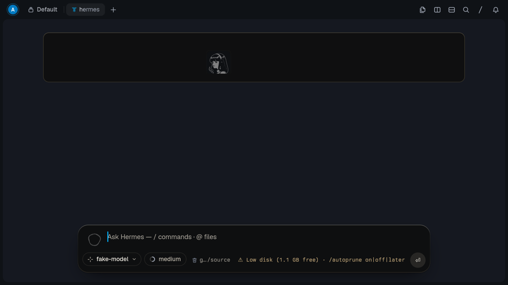
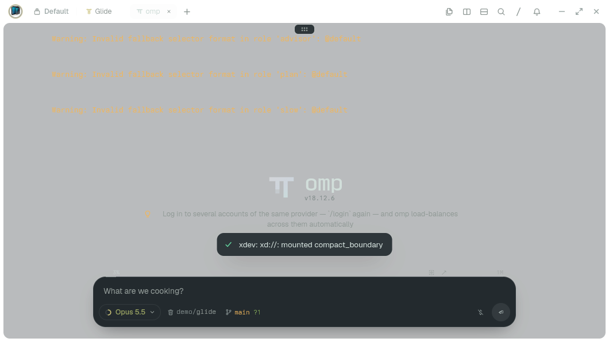

W8 baseline recovery — blocked
0 visual rounds. 0 accepted candidates. This is a diagnostic checkpoint, not the requested finished comparison board.
Before: real Tern, unqualified theme

Logical viewport 1060 × 596. Native capture 2120 × 1192. Click for the native PNG. Dash theme qualification failed.
After: no candidate
No production UI was changed. No independent judging, rubric score, or accepted improvement is claimed.
omp: layout reference only

Copy the layout grammar, not the palette. The target palette remains Dash Living Night.
Current blockers
Both tested Tern binaries reject the privately installed Dash theme: no theme called "dash". The same rejection occurs after the native composer mounts. The latest attempt had 8.3 GiB available, above the revised 4 GiB gate.
The existing OpenRouter login-store key resolves through the read-only Hermes pool. Two free vision probes returned HTTP 429, with a 60-second wait before the retry. The account has 0 of 1,000 free daily requests remaining. Reset: 2026-11-15 00:00 UTC. No paid route was used. Seven offline readiness and isolation regression tests pass.
Populated baselines, visual rounds, paired judging, native rubric checks, product tests, CI, and a UI PR remain incomplete. Neither installed Tern binary nor either owner Hermes installation was modified.